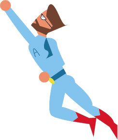

To our most helpful, kind, patient and understanding professor: all of us in MEJO 187 would not have made it through without you, and so we wanted to leave you with this little graphic (an accurate representation of what you look like in our eyes), and some words to remember us by! We will NEVER forget your kindness. You are definitely loved and appreciated, and we wish you all the best~
Thanks for a great class!! I appreciate all the times you responded to Slack messages in the evening and helped me with my code. You made an evening class fun and interesting and I'll never forget it!
-Krupa Patel
Hi professor! Thank you so much for all of your teaching this semester and especially for your patience with me and my late projects! You were so incredibly helpful and fun to learn from and I really enjoyed having you this fall. Thanks again for your helpful feedback and for being so dedicated to us students; this has been one of my favorite courses here at UNC!
-Jessica Tufts
Boom! Hey Andrew! Thanks for being so patient and understanding for all of us and I can prob speak on behalf of the class that we would not be where we are without you! How do you manage to keep up with us and your other job?? It's literally insane!! You're the coolest prof I've ever had and I hope we all get to meet one day in the future instead of having to say hey through zoom 😔. Hope the move's going smooth and thanks for such a great semester despite everything!! ❤️
-Kaitlyn Dang
Thank you for being my fave professor this semester :D I learned so much and I really enjoyed this class!!! I hope you have an AMAZING break!
-Layna Hong
Thank you for being so patient with me during office hours and so willing to help with my projects!
-Neerja Shah
Thanks for everything this semester! I really enjoyed your class and appreciate everything you've done for us!
-Riley Bergamasco
Thanks so much for teaching MEJO 187. This was an awesome class and having you as my professor made uni quarantine a lot more bearable.
-Dominic Fekete
You've been the most supportive and understanding professor I've had in a long time and I can't thank you enough. Thanks for helping with projects and staying way past just to askwer dumb questions. Very cool much thanks
-Chris Ocana
Thanks for a wonderful semester!
-Spencer Poole
Professor Sipes, thank you so much for all of your support through this difficult semester. Your class was the joy in the…2020 year and I appreciated your accommodations, kindness, and enthusiasm!
- Chae Hyun (Cecilia) Lee
Thanks for being a great teach and helping us throughout the pandemic!
-Jake Jeffries
Thank you SO much for all your help, patience, and support this semester!! Could not have gotten through this class without you!!
-Emma-Blake Byrum
Thank you so much for all of you patience and time! I can't have imagined getting through coding without you! You are by far one of the best professors!!
-Pareen Bhagat
Prof! Thank you 100 times for being such an amazing and kind instructor through this ROUGH semester and giving us the serotonin boost we needed in such a late class. I enjoyed learning how to code (something I never thought I'd say) a lot more with you teaching it! That being said, please don't look at the code for this page to save me the embarrassment. (P.S. I hope you don't mind me keeping this ✨superhero✨ version of you for my portfolio)
-Emily Rattanavong